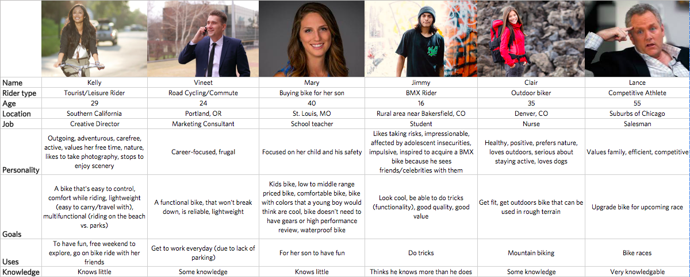
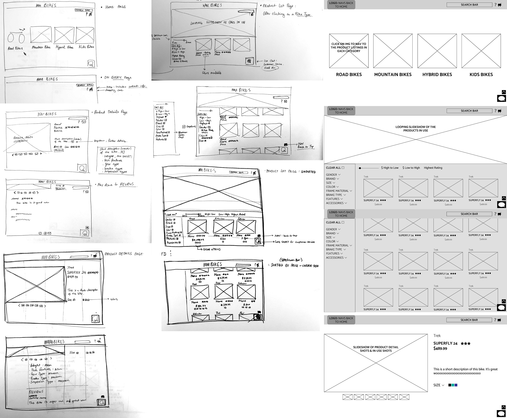
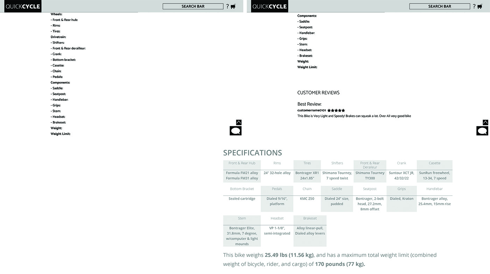

Quick Cycle Bike Finder
2018
Quick Cycle is a fictional online bike retailer whose audience ranges from buyers with little to no bike knowledge, to those with expertise. I designed the website to function as the perfect bike finder for anyone who visits Quick Cycle. The project largely entailed of user research and prototyping; branding and the customer review elements were not a part of this assignment.


PROCESS
Observation and Gaining Product Knowledge
My user research process began with becoming the user myself, tracking my own journey of buying a bike online. The two set of search keywords I used on Google's search engine were "where to buy a bike" and "bike shop online." I had very little knowledge on bikes at the time. The most important takeaways from my observation was that as a user, I valued familiar brands, product description, reviews and ratings from other customers, and comprehensibility of product details.
After familiarizing myself with the process of buying a bike online, I expanded my product knowledge by learning about different types of bikes, bike sizes, what people look for when buying new bikes, etc.
Building Personas and User Stories
Next step was creating a persona as a team. There were 6 teams in the class, thus ultimately 6 different personas. My team crafted a persona named Clair, whose description could be found below along with the rest of them.
Using Clair, I broke the purchasing process down into a series of small, discrete objectives, following the User Story pattern: "As a < type of user >, I want < some goal > so that < some reason >." In the end, the 6 teams compiled the user stories of each persona together into a document that could be used as a base for the user experience design on Quick Cycle's website.
Expand User Stories Sample
- •As Clair, I want my bike to be a mountain bike so that I could be more involved in another outdoor activity.
- •As Clair, I want to shop at a brand that is well known so that I can be assured of the quality of the product I will be purchasing.
- •As Clair, I want my bike to perform smoothly on trails so that I can have my dog along with me when I ride.
- •As Clair, I want my bike to have high endurance level so that I can challenge myself on the trails.
- •As Clair, I want my bike to sort the options by price, costing less than $3,000 so that I can browse through options that are high quality enough for me, but not getting too much into the professional level.
- •As Clair, I want to compare the different technological features employed in my options so that I can see which features I need for my bike.
- •As Clair, I want to carefully read the descriptions on my bike options so that I can find a bike that will allow me to expand my experience in the outdoor activity.
- •As Clair, I want to read through the reviews on each product so that I can once again be assured of the sucessfulness of my bike.
- •As Clair, I want to chose size 17.5 after choosing a model I like so that I can have a comfortable experience with my bike that fits me well.
Low-Fidelity Wireframes
Before getting into the refinement stage, I developed low-fidelity wireframes, mapping out the user interaction with each design element.
Feature Organization
Optimizing feature organization was challenging but absolutely necessary. Keeping in mind the user stories and how my observed experience was, I came to the solution of designing a table for the various specifications in a bike in an easily comprehensible method.
Adobe Illustrator and Adobe InDesign were used to create this project.